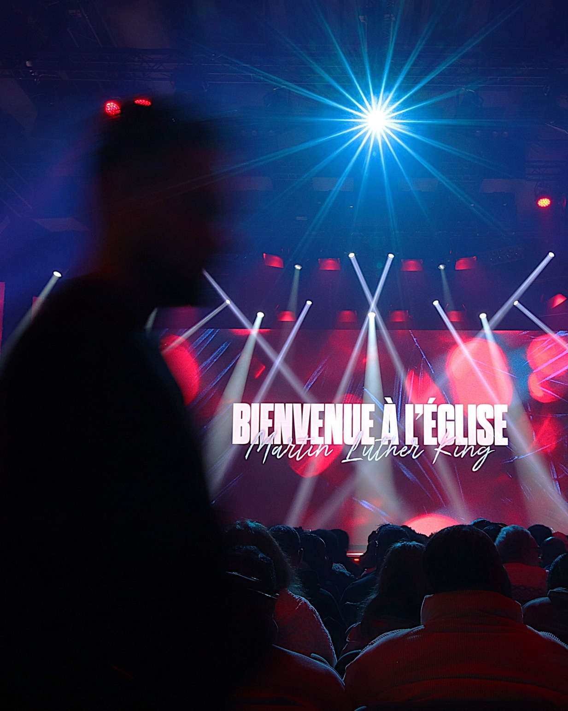
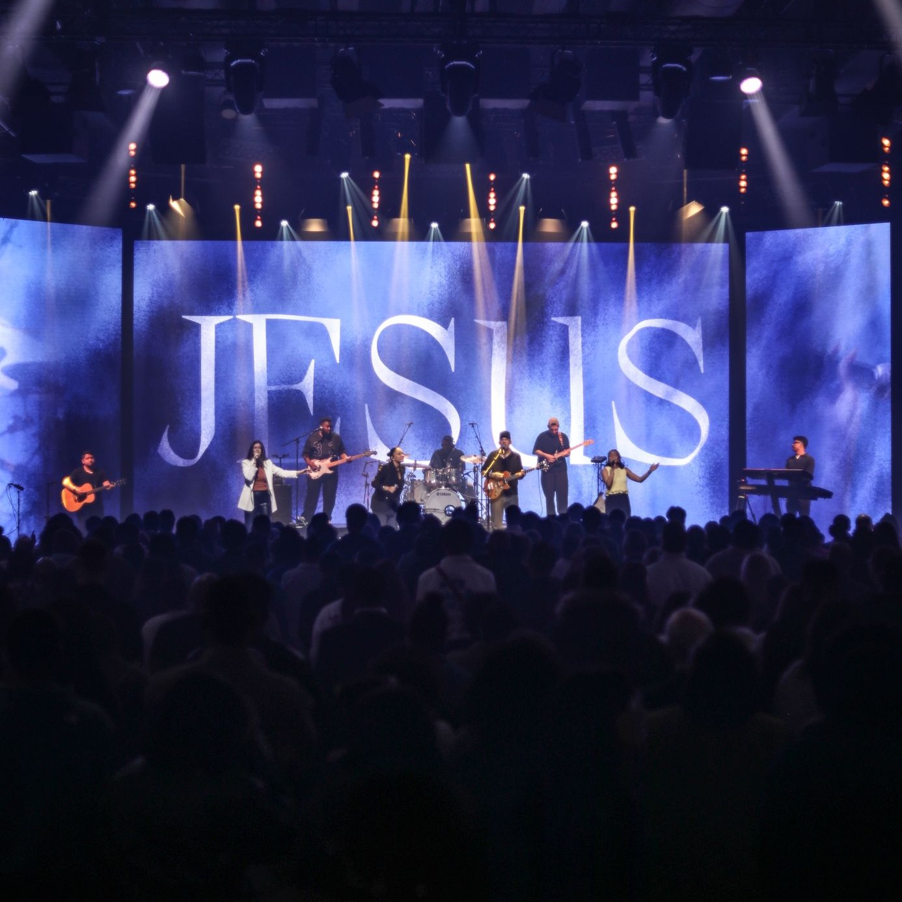

Fin 2004
Début à Créteil
L’église débute au 113 rue du Général Leclerc, dans les locaux de l’église Réformée de Créteil-Charenton.
Église MLK
De Créteil à l’Espace Grand Paris, MLK grandit autour d’une conviction simple : être aimé, apprendre à aimer mieux, et aimer plus largement.
Site officielFrise historique
L’église débute au 113 rue du Général Leclerc, dans les locaux de l’église Réformée de Créteil-Charenton.
Achat de l’ancienne ANPE de Créteil, au 1 rue Tirard. Après aménagements, le lieu accueille environ 200 personnes.

L’opportunité d’acquérir le bâtiment de l’autre côté de la rue se présente en 2016. Après travaux, l’église déménage en avril 2017.
Les célébrations peuvent être organisées dans le nouvel Espace Grand Paris, loué par l’église.

Cette étape sera complétée avec la vision actuelle, les ministères, les ambassades et les projets de l’Église MLK.
Communauté